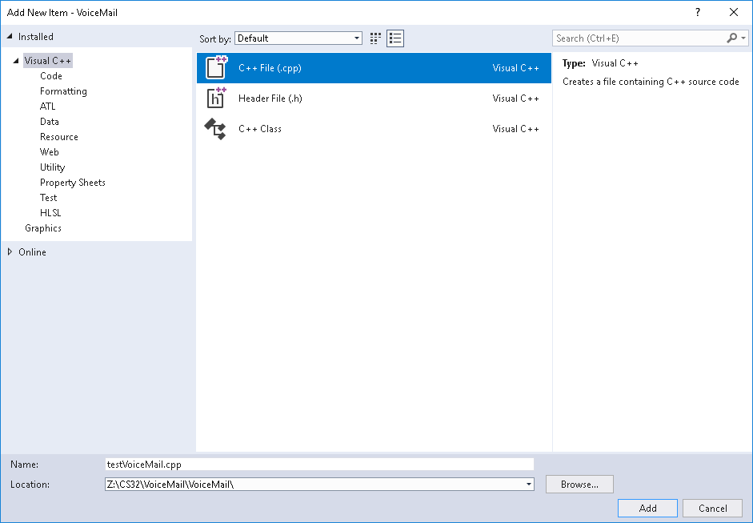
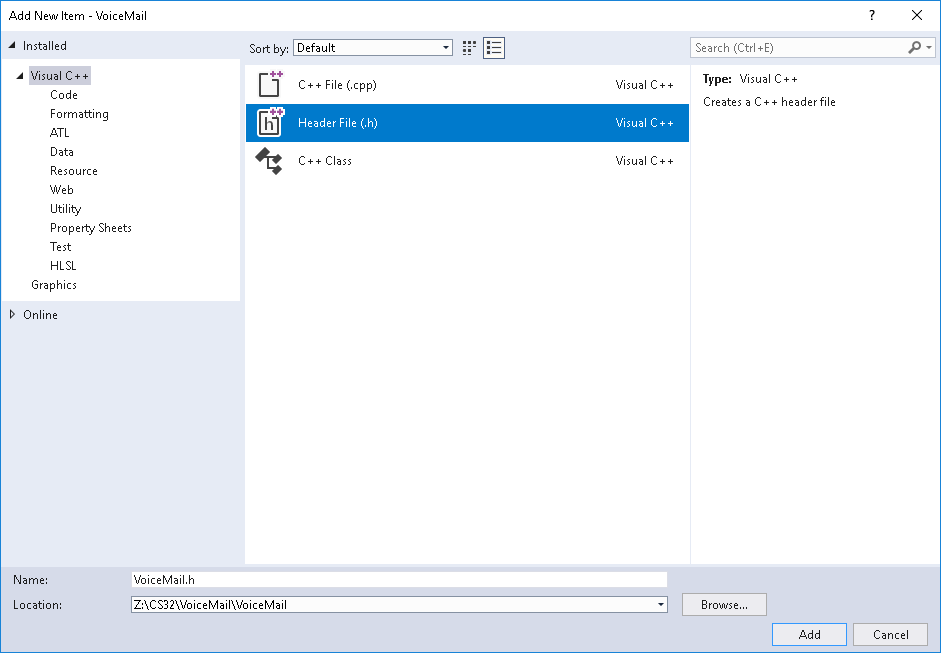

If you want to use Visual C++, you can use either Visual C++ 2022 or 2019 or 2017.
Microsoft Visual C++ 2022 is installed on the SEASnet lab machines and the SEASnet Remote Desktop (which you can remotely access from any Windows or Mac computer with a high-speed Internet connection), so you don't have to install Visual Studio if you want to use it.
Note that you will be able to log into that SEASnet Remote Desktop only from
If you would like to use Visual C++ 2022 on your own computer running Windows, you can download Visual Studio Community for free from Microsoft and install it. (As a student, you have free access to other Microsoft developer tools through their Azure Dev Tools for Teaching program.) Early on, you'll be presented with a window showing "Workloads". Be sure to check Desktop development with C++. Click Install to continue.
Note that although you can install trial versions of Visual Studio Professional or Visual Studio Enterprise if you want to, using them for CS 31 or CS 32 would be like using a flamethrower to light a candle when a match would do.
Visual C++ is designed to support developers of large systems, so to use it as we will to write programs that are small by comparison may seem like overkill. However, over time you will come to appreciate some features (the debugger, especially).
Here is a way to set up a Visual C++ project to compile and run a simple three-file program. A number of these steps may have alternate ways to achieve the same end. These instructions are for Visual C++ 2019; the steps for Visual C++ 2022 or 2017 are similar.
Start up the Visual C++ IDE (Integrated Development Environment). If you don't have a shortcut on the Desktop, then from the start menu select Visual Studio 2019 (with the purple squared-off infinity sign icon, not the folder icon. The first time you fire it up after installation, it may take half a minute to get you to the start page. If it asks you to sign in, you may just click "Not now, maybe later" if you wish. If it says "Start with a familiar environment", for the Development Settings, select Visual C++ from the drop-down list. (If you're not offered Visual C++ as a choice but see other languages, you forgot to specify Desktop development with C++ as a Workload during installation when you installed Visual Studio Community.) Click the Start Visual Studio button. Then on the What would you like to do? page, click the Create a new project box on the right.
On the Create a new project page, scroll down to Empty Project (Start from scratch with C++ for Windows.) and select it.
On the Configure your new project page, enter for Project name, a project name such as "hello". So that you can more easily find your projects later, you might want to change the Location to something like "C:\CS31" on your own machine, or "Z:\CS31" on a SEASnet machine. On a SEASnet machine, even if you don't use a simple location like "Z:\CS31", at least change the initial part of the location from "\\smb02.seas.ucla.edu\yourusername\" to "Z:\". In general, to make reading error messages easier in step 8, a short location like "C:\CS31" or "Z:\CS31" is better than a long one like "\\smb02.seas.ucla.edu\yourusername\my documents\visual studio 2019\projects", and a short project name like "hello" or "P1" is better than a long one like "example CS31 project". Click Create. (If you're on a SEASnet machine you may then see a dialog saying "Found a suitable location...". It's harmless to click OK to dismiss it.)
Caution: If you are on a SEASnet machine, be sure to use a project location path starting with "Z:". If you don't, when you try to run your program, a paranoid SEASnet security application will put up a dialog box saying "Unable to start program ... This program is blocked by group policy."
(This step is unnecessary for Visual Studio 2022 or 2019.) Select Project / Properties. In the Property Pages dialog, in the left panel, select Configuration Properties / Linker / System. In the right panel, select SubSystem, and in the drop down list to its right, Console (/SUBSYSTEM:CONSOLE). Click OK.
Select Project / Add New Item... In the Add New Item dialog, select C++ File (.cpp) in the middle panel. Enter a source file name, such as "testVoiceMail", in the Name text box below. Click Add.

Edit the testVoiceMail.cpp file in the window that appears. Type in a program like
#include "VoiceMail.h"
#include <iostream>
using namespace std;
int main()
{
VoiceMail vm;
vm.record("Hello, this is Rachel at cardholder services.");
vm.playback();
vm.erase();
vm.playback();
cout << "End of VoiceMail test" << endl;
}
From the Project menu, select Add New Item. This time, in the Add New Item dialog, select Header File (.h) in the middle panel, and enter the header file name "VoiceMail" in the Name text box below. Edit the VoiceMail.h file in the window that appears:

// VoiceMail interface
#include <string>
class VoiceMail
{
public:
void record(std::string msg);
void erase();
void playback() const;
private:
std::string m_message;
};
From the Project menu, select Add New Item. This last time, select C++ File (.cpp) in the middle panel, and enter the source file name "VoiceMail" in the Name text box below. Edit the VoiceMail.cpp file in the window that appears:
// VoiceMail implementation
#include "VoiceMail.h"
#include <string>
#include <iostream>
using namespace std;
void VoiceMail::record(string msg)
{
m_message = msg;
}
void VoiceMail::erase()
{
m_message = "";
}
void VoiceMail::playback() const
{
if (m_message.empty())
cout << "There is no message to play back." << endl;
else
cout << m_message << endl;
}
From the Debug menu, select Start Without Debugging. This will save any changed files, compile the source files, and run the resulting executable if there were no build errors. (If you launch your program by finding and double-clicking on the .exe file, or if you're running Visual Studio 2017 and you selected Start Debugging or you forgot to do step 4, your console window screen will disappear as soon as your program finishes executing, which you don't want.)
If you see a dialog box that says "This project is out of date: ... Would you like to build it?", check the "Do not show this dialog again" checkbox before clicking Yes.
If your program has any compile-time or link errors, a dialog box will appear telling you there were build errors. Check the "Do not show this dialog again" checkbox before clicking No, you don't want to continue. The Output window below your source file will list the errors. Double-click the first error message to see what it's referring to in your code. Fix the error. You can click on and fix other errors as well, but be aware that sometimes one mistake produces multiple error messages, so your first fix may resolve those problems as well. Go back to step 9.
If your program runs, its output will appear in a new console window that pops up. When your program finishes, that console window will then display text like
Z:\hello\hello\Debug\hello.exe (process 1234) exited with code 0. Press any key to close this window . . .
Those two lines are produced by the Visual Studio environment, not by you; we will never consider them to be part of the output of your program. Press any key to dismiss the console window.